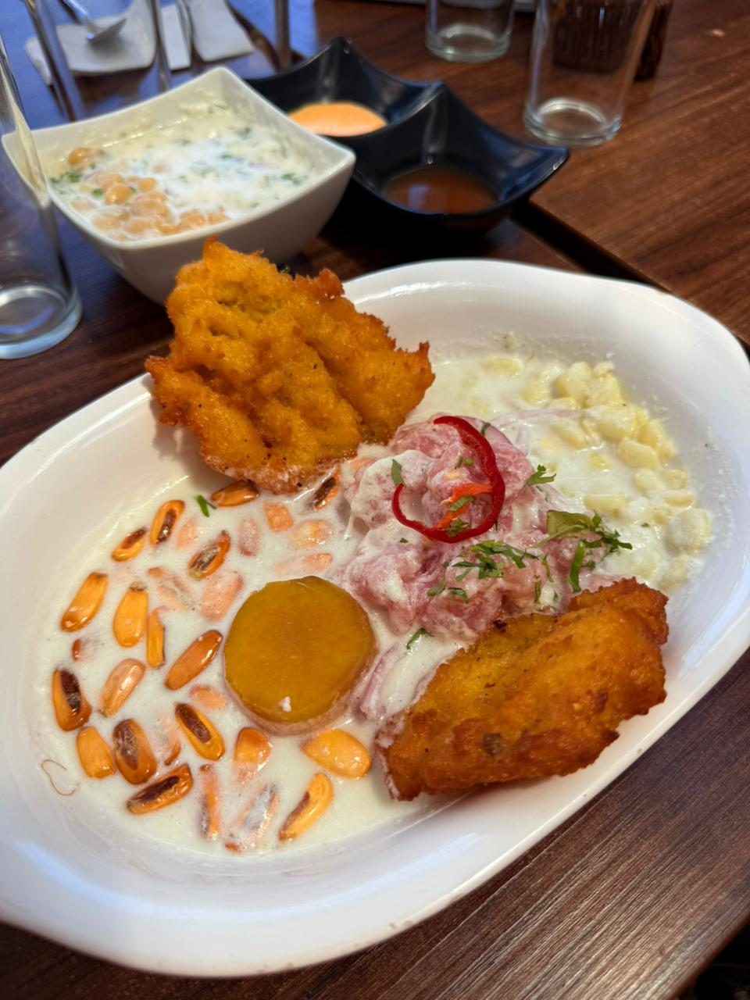
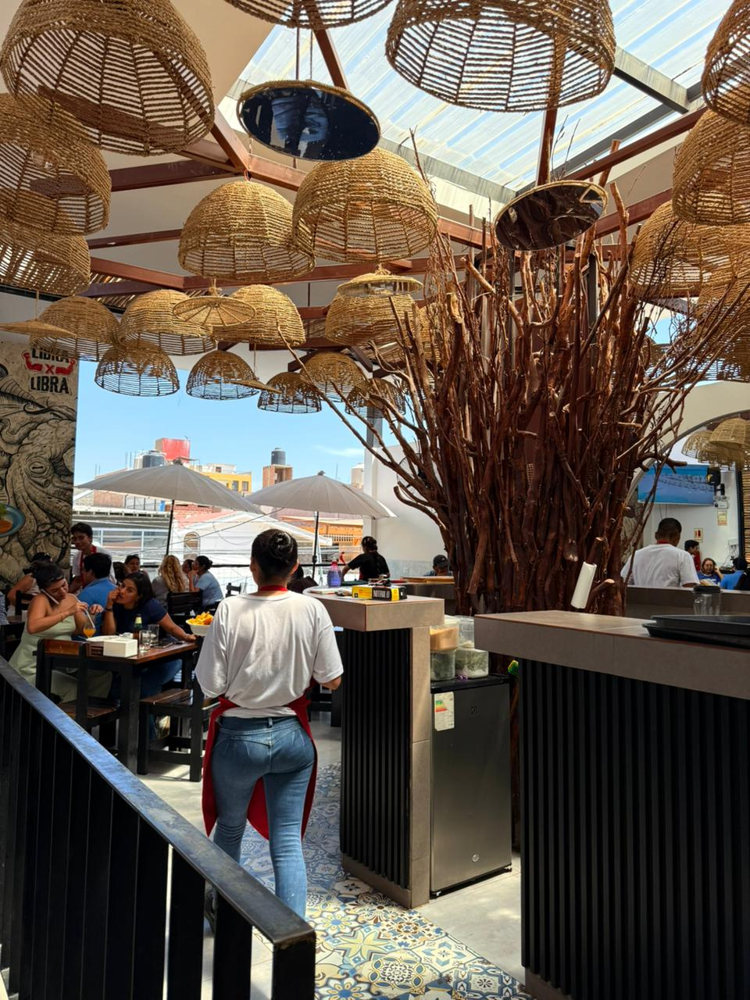

Libra x Libra: Capas de calle, sabor de identidad
El sonido no es el de una galleta crujiendo, sino el del fuego lamiendo el metal y el golpe rítmico del cuchillo sobre la tabla de picar. Un aroma a limón recién exprimido se mezcla en el aire con el calor de las brasas. Aquí, el ritual no empieza con un envoltorio, sino al recibir el plato: un despliegue de frescura y color que brilla bajo la luz del local. En Chiclayo, sentarse en Libra x Libra es aceptar que el hambre se combate con generosidad y que el sabor del barrio tiene su propio templo.
Buen Diente

Ceviche de pescado acompañado de cancha serrana, choclo, camote y torta chiclayana de maíz.
Capas de historia: Resiliencia y transformación
La historia de Libra x Libra es el relato de una reinvención. Todo comenzó en el convulso 2020, cuando el mundo se detuvo por la pandemia. En medio de la incertidumbre, la marca encendió sus fogones bajo un formato de delivery de hamburguesas, apostando por la contundencia en un momento donde la cercanía se medía a través de un pedido a domicilio.
Sin embargo, lo que inició como una respuesta a la crisis, rápidamente mutó gracias a la visión de sus fundadores y al pulso de la calle. Esa primera capa de éxito basada en la comida urbana permitió que la marca evolucionara y diera el salto al formato físico, expandiéndose hacia el rubro marino sin perder su esencia original.

Hoy, lo que empezó en una cocina cerrada se ha consolidado en locales estratégicos como Santa Victoria y la zona de Las Musas, logrando lo que pocos consiguen en tan poco tiempo: pasar de una bolsa de delivery a ser una parada obligatoria en la ruta gastronómica de Chiclayo.
Sabor de identidad: La mística del plato generoso
En Libra x Libra, el ceviche encuentra una de sus expresiones más logradas en la versión cremosa acompañada de torta de choclo, donde todo gira en torno al equilibrio y al respeto por el producto.
El ceviche se prepara con pescado fresco en cubos, sazonado al momento con sal, ají y limón, y acompañado de cebolla roja en pluma. La curación es breve y precisa, realzando la frescura y la jugosidad del pescado sin afectar su firmeza
Más que una propuesta, es un plato que apuesta por la precisión en lo esencial, donde cada elemento está medido para complementar al otro sin opacarlo.
Esta propuesta no busca imitar a nadie; es la representación de una gastronomía que entiende al chiclayano de hoy: intenso, exigente y que valora la historia de superación detrás de cada plato. Al final, lo que queda es la certeza de un sabor propio, una identidad que nació en tiempos difíciles para quedarse y que se sirve, con orgullo, libra por libra.